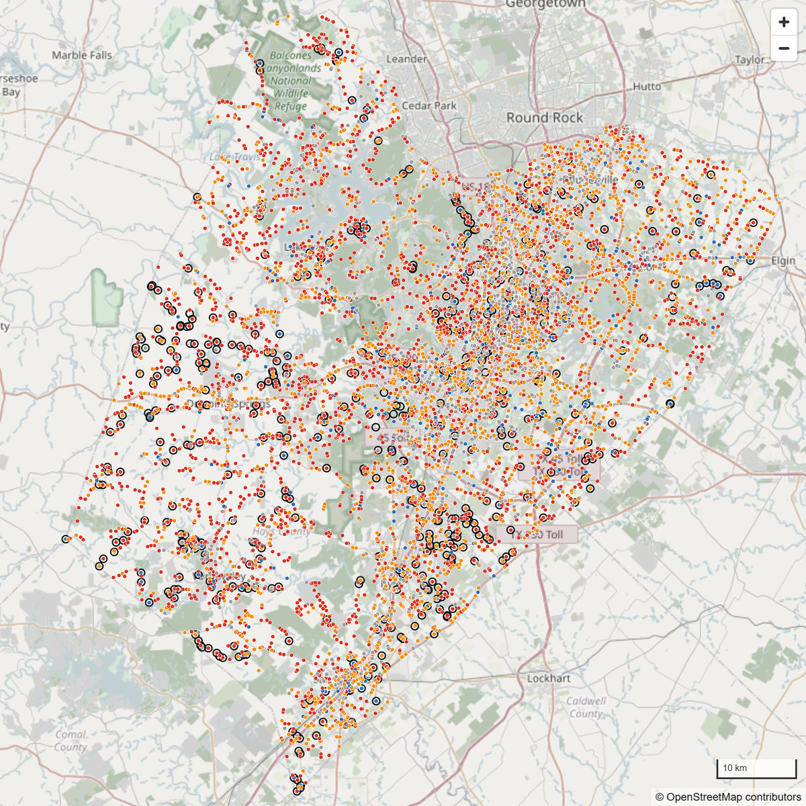
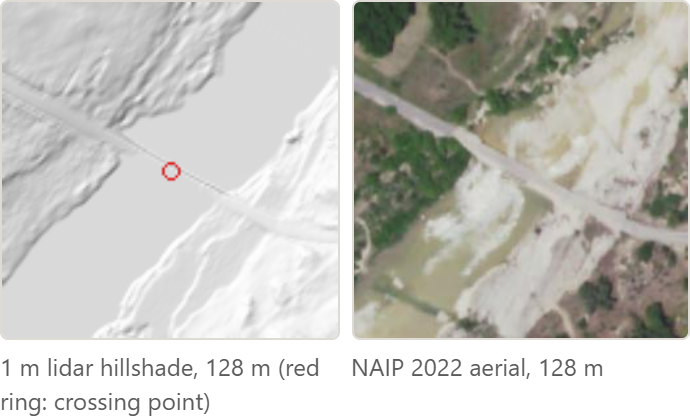
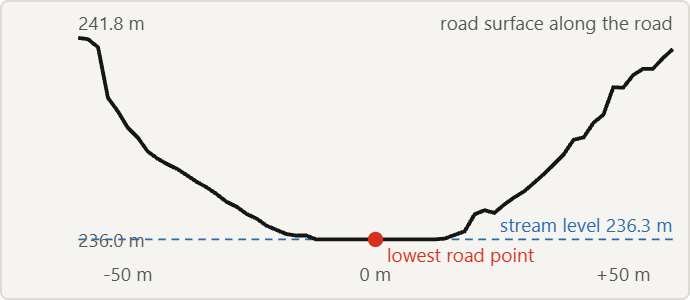

Road-stream crossings in Hays and Travis counties, found and measured from open data
November 2026 Ujjawal Patel
When a creek rises, a road that dips through the stream bed (a low-water crossing) floods before
anything else. Texas's public inventory (TxGIO) lists 8,339 low-water crossings statewide, contributed by counties,
cities, agencies and volunteers. It does not record how high each road sits above its stream, and it may
miss crossings. This pilot builds a measured list automatically from free public data and tests it honestly.
What the pilot does
Find the places where a road meets a stream: Census road maps × USGS stream maps, plus stream lines traced
from 10 m elevation, which catch small channels the maps miss.
Measure each crossing from 1 m lidar (a laser-scanned map of the ground): trace the road surface,
find its lowest point and compare it with the stream level beside it. That gap is the clearance;
about 0 m means the road runs through the stream bed.
Classify each crossing as ford-, culvert- or bridge-like, from the measurements alone. The model
learned from Hays County examples in TxGIO and the federal bridge inventory (NBI).
Rank the crossings with a transparent points table: type, clearance, upstream drainage area and missing
warning sign. It is a screening rank, not a forecast.
How it was tested
The model learned from Hays County only. Before any Travis computation, the test rules were frozen and
the model file was locked by its fingerprint (sha256); only aggregate Travis label counts had been looked at.
Travis was then run once, and the results are reported as they came out, including the weak one.

All 9,577 crossings found: Travis County (north) and Hays County (south).
ford-like culvert-like bridge-like
on the TxGIO list. From the live demo.
Results
Hays (training)
Travis (held-out test)
Road-stream crossings found (of which measured from 1 m lidar)
2,772 (2,338)
6,805 (5,096)
Known low-water crossings found (TxGIO, not volunteered; within 30 m)
88% of 276
93% of 211
Fords told apart from bridges, measurements only (AUC: 0.5 chance, 1 perfect)
0.85
–
Ford recall: of the real fords, the share it called "ford"
74%
74%
Ford precision: when it says "ford", the share that are fords
76%
22%
Ford-like crossings not on the TxGIO list (unverified candidates)
–
2,031
Hays figures are cross-validated; precision and recall count only crossings with a TxGIO or NBI
label. The brief's targets were 85% precision and 75% recall. Processing Travis took about 33 minutes on one
laptop (4 cores, home internet), after downloads.
What the numbers say
Finding and measuring work on a county the model never saw: 93% of Travis's known low-water crossings
were found, and three in four crossings passed every measurement check and carry a measured clearance.
Shape alone is not yet precise enough in a city. The model behaved the same in both counties (caught
74% of fords, wrongly flagged about 28% of non-fords). But fords are only 9% of Travis's labelled structures
(55% in Hays), so there the false alarms outnumber the real fords. Aerial-image recognition is the next step.
The 2,031 unlisted ford-like crossings are places where the road dips to stream level: a mix of
unlisted fords, small culverts and road dips over shallow drainage. They are candidates for review, not new
fords.
How to read one crossing: CR 174 over the Blanco River (Hays County)


From the live demo. Left: 1 m lidar hillshade (the shape of the ground; red ring: the crossing
point). Right: NAIP 2022 aerial photo. Below: the road surface along the road.
Hillshade and photo
The road runs across the river bed itself. It is listed in TxGIO as a vented ford, 4.9 m from the
found crossing.
Profile (the key picture)
The black line is the road surface every metre along the road. The red dot
is its lowest point, where water goes over first. The blue dashed line
is the stream level beside the road.
Clearance = lowest road point − stream level
0.00 m here: the road's lowest point is at stream level (both 236.28 m), so water reaches the road as
soon as the stream rises. A road on fill over a culvert sits higher. Under a bridge the lidar shows the ground
beneath, so clearance can read near 0 there too, which is why the road's slope next to the stream is also used.
Class and score
78% ford-like. Screening score 10 of 10: type 3, clearance 3, drainage 3 (the catchment is at least
543 km²) and missing warning sign 1. Every term is shown, so the rank can be checked.
Every number carries a certainty label
MeasuredGeometry from USGS 1 m lidar (mostly the 2017 Central Texas survey).
DerivedUpstream drainage area from 10 m elevation; marked "≥" where the catchment leaves the routed area.
ClassifiedModel output, published with its held-out precision and recall.
ScreeningThe rank. It is not a flood forecast and is not validated yet.
Limits, stated plainly
The score is not validated. It did not track the bridge inspectors' overtopping rating (NBI
item 71) in either county.
Bridges and fords look alike in clearance. In Hays, bridges even read lower than fords, consistent
with the lidar showing the ground under the deck. The steep drop at the bridge ends carries most of the
difference.
Labels differ by county: Hays mostly from the county, Travis from FIS, atxfloods.com and volunteers.
NBI coordinates are coarse.
The data ages differ: the lidar is from 2017-2018 and the photos from 2022. Rebuilt crossings
can disagree.
Drainage area is topographic; over the Edwards recharge zone the real area differs.
Next steps
An aerial-image model (NAIP) to cut the false fords.
A hand-labelled gold set, and a blind spot check of the unlisted ford-like crossings.
More counties, then statewide on a computing cluster.
Design rainfall (NOAA Atlas 14) in the ranking; later, overtopping hydraulics.
Ways to collaborate
Field-verified crossing records to train and test against.
Review of the ranking, and of which decisions it should support.
Computing time for a statewide run.
Joint work on the imagery model.
In the live demo
Click any dot for its hillshade, aerial photo, road profile and labelled measurements. "Show: only
those NOT in TxGIO" leaves the unlisted ford-like crossings. Results holds page 1's numbers; Spot check runs the blind review.